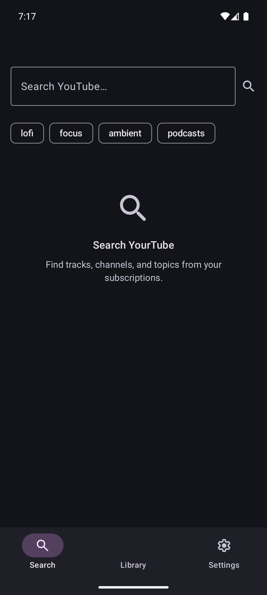
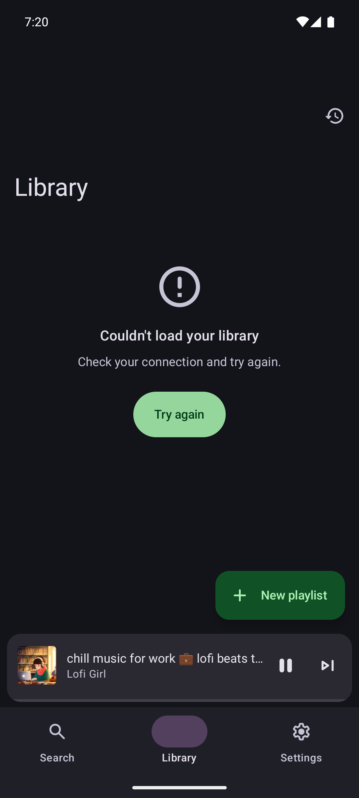
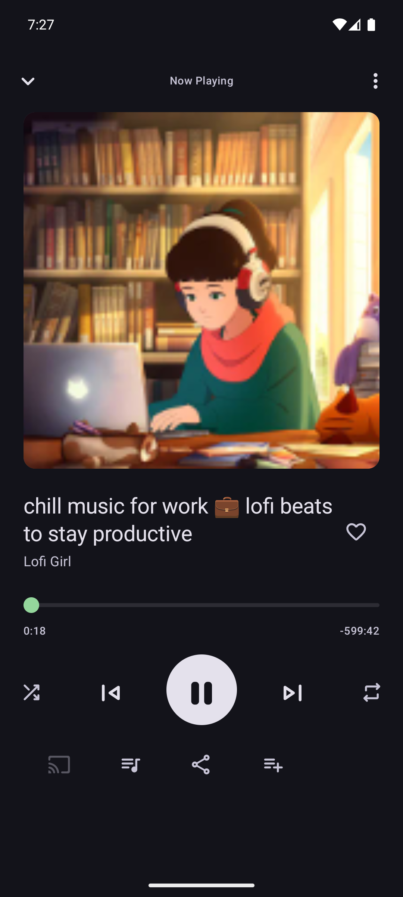
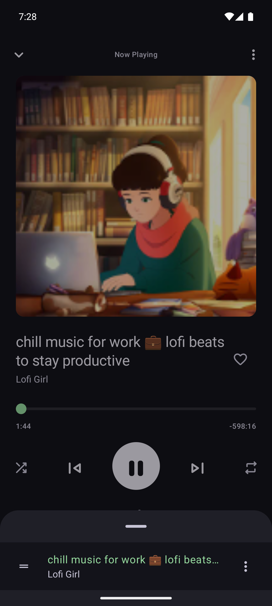
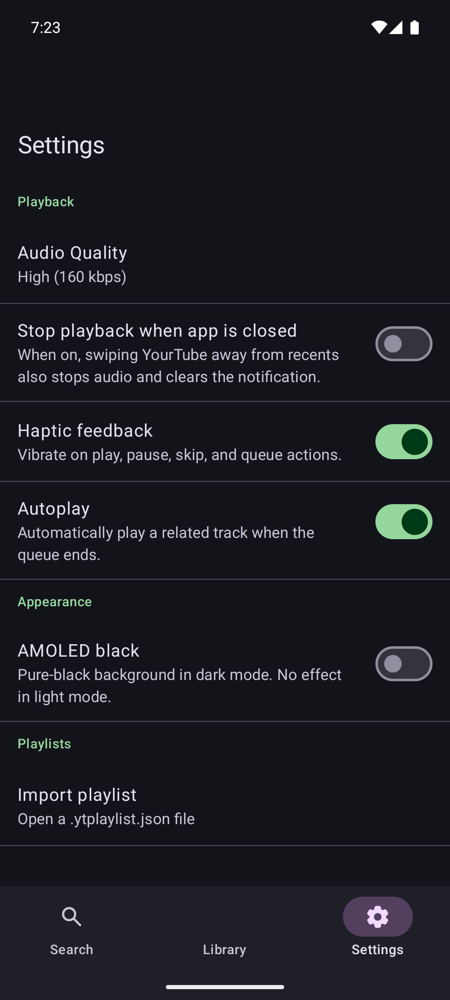

YourTube
A native audio client for YouTube content. Search, queue, and listen in the background — on your own devices, on your own terms.
Screens





What it does
-
Search and play
Look up any public video, start audio playback, keep listening with the screen off.
-
Queues and playlists
Build queues on the fly, save them as playlists, reorder and remove with native gestures.
-
Lock-screen controls
Full media-session integration — play, pause, skip, scrub from the notification or lock screen.
-
No accounts, no tracking
No sign-in. No analytics SDKs. No third-party trackers. Personal data stays on the device.
-
Self-hosted updates
Android checks a JSON feed on cold start and prompts when a new build is published here.
Honest scope
Personal use. YourTube streams audio from public YouTube videos to its owner's own devices for offline-of-mind background listening. It is not distributed through the App Store or Google Play, and no public rollout is planned. The stream extractor depends on undocumented YouTube internals — extractor breakage can stop playback without warning until manually patched. No telemetry, no analytics, no third-party tracking SDKs.